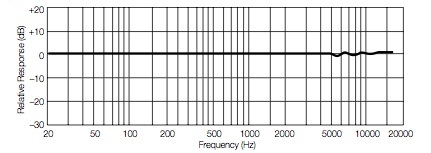
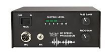

<img> as data-original-src.
Contents: Basics; Brief Discussion of IMD; Dynamic Range & Things; The Microphone; Microphone Mods; Speech Compression & Clipping;
The whole intent of this article is to maximize the readability of your transmissions, and hopefully aid you in maintaining contacts once you make them. However, nothing you do on your end, will compensate for a lousy setup on the far end! It is also important to remember, that no amount of speech processing, regardless of how it's done, will improve upon your natural speech pathology! If it could, we'd all be wearing Darth Vader helmets!
Every single type of modulation, AM, FM (both phase and true FM), SSB (Single Side-Band), etc., all have a specific set of operating parameters. Some of those parameters are set in stone, and some are dynamic. We're not dealing with any type of modulation here, except SSB, and there is a good reason why. Transceivers which transmit SSB, have easily-adjustable microphone gain controls, and often speech processing settings as well. It is the misuse of these controls, and the misuse of measuring techniques we're going to discuss.
On the other hand, FM transceivers usually don't have (external) microphone gains, and never have speech compression in the usual sense. They do have pre-emphasis, but that's a whole new subject, and we're not going there!
While reading this article, it will become very evident that correct microphone gain adjustment is the most important factor in achieving good readability on the other end of your contact. Unfortunately, most owners' manuals, and on-line articles seldom cover this important attribute, focusing instead on adjustments for the internal and/or external DSP and/or equalizers. While those adjustments are important, excessive microphone gain will effectively negate their viability.
The letters IMD stand for Inter-Modulation Distortion, but more correctly, third-order inter-modulation distortion. It is caused by non-linear behavior of the signal path anywhere from the microphone, through the IF stage(s), the driver stage, to the final output stage of a transceiver. It can be caused by a variety of issues including too much microphone gain, over compression, incorrectly biased finals, high SWR, and poor voltage stabilization. Read into that last item, incorrect wiring.
Contrary to popular belief, IMD cannot be heard on a built-in audio monitoring function, or seen on a station monitor, or a simple oscilloscope, until it really gets excessive. In which case, it can be heard a few kHz either side of the bandpass—a place no one seemingly listens for it. This is the exact reason it is called splatter!
If you'd like a technical explanation of what IMD is, how it's measured, and its effects, this article by Tom Rauch, W8JI, is as good as it gets! When reading the article, pay attention to the necessary hardware needed to accurately measure IMD.
It should be noted at this point, that designing a mobile solid state transceiver (nominally 13.8 vdc) to meet the FCC mandated IMD levels, is a tough nut to crack. In fact, high SWR from inadequately matched antennas, and poor wiring jobs add to the IMD level!
Dynamic Range is described as the ratio of the largest to the smallest intensity of sound (speech) that can be reliably reproduced. In this case, by a human voice. The measurement method uses a frequency weighted scale, and for human voice that's dB(C). However, it isn't a finite level we need to be concerned with. After all, we do have microphone gains on our SSB transceivers. What we are concerned with, is the ratio of the largest to the smallest intensity of speech.
To a lessor degree, we also need to be concerned with frequency dynamics. The reason is, the bandwidth in most transceivers capable of SSB transmission, are limited to about 2,400 Hz (≈300 to ≈2,700). What's more, the gain response across the range is not perfectly linear. If this wasn't enough to deal with, every individual has a different speech pattern. It is these unique patterns, the dynamic range, and the mean frequency which allows us to identify who we're talking to, even though we cannot see them. Incidentally, the study of speech recognition is called neurolinguistics.
Measuring all of the dynamics of speech is a discipline all by itself, and some would argue it is multiple disciplines. In fact, people often spend their whole working careers bathed in the study of human speech pathology and neurolinguistics. Over the years these folks have developed all manner of devices to qualify and quantify what speech is, how to measure it, and how to produce it with clarity through any given bandwidth. One rather unfortunate aspect, however, a lot of amateurs think they know more about the subject than the scientists do! That fact has proliferated the wide-spread (pun intended) use of speech processors, equalizers, and other wide-banded devices, to the detriment of us all.
It should also be mentioned, that measuring the various attributes of human speech isn't easy. Nor is the effect these speech attributes have on transmitter performance. Suffice to say, very few amateurs have the requisite equipment to do either. While popular press would have you believe otherwise, you cannot use a wattmeter (damped or undamped), you cannot use a common oscilloscope (which includes a station monitor, no matter who made it), and you cannot detect inter-modulation distortion (IMD) within the bandpass aurally until it is very crude. It is this lack of measuring capability, I believe, that there are so many lousy-sounding SSB signals on the air.
Unfortunately, far too many amateurs (it really doesn't matter if you're a neophyte or not), just don't understand the relationship between peak versus average power in a SSB signal. Due to human voice dynamics, the measuring technique, microphone and compression gain levels, DSP settings, etc., it is not uncommon to see a peak to average ratio anywhere between 6:1 and 3:1. This fact causes too many folks to assume their transceiver isn't putting out its rated power, because their wattmeter only reads 15 to 35 watts. So, they crank up the microphone gain, kick in the speech processing, and end up over driving the various stages of their transceivers and/or power amplifiers. The net result is distorted transmit audio due mainly to excessive IMD.
Further, most (affordable) wattmeters sold to amateurs have an accuracy around ±10% of their full scale reading. Peak reading wattmeters aren't any better. Whatever yours reads while transmitting a dead carrier (CW) into a 50 ohm dummy load, will be very close to the peak power in SSB mode. For a 100 watt radio, and nominal wattmeter accuracy, the reading may be anywhere between 90 to 110 watts! If that same meter reads from 15 to 35 watts while transmitting SSB, you're probably very close to where you should be. Much more than this, and you'll most likely have distorted transmit audio.
While slightly off the subject, there is one modification which should never be done; boosting the power output. The finals of modern transceivers are selected to provide a given power level, yet stay within their linear response region. When the drive and bias levels are adjusted to increase output power, they force the finals to operate outside their linear response region. The result is highly increased levels of IMD, all at the expense of ≤1 dB of power increase. Most mobile operators would do better by properly mounting their antennas!
Modern solid state transceivers (almost universally) use a low impedance (nominally 500 ohm) microphone. The elements are usually electret condenser types, but may be dynamic. Some do have preamps built in, but unlike a power microphone, their gain and impedance matching is fixed. Gain and DSP adjustments aside, the way you use your microphone can have a major affect on your audio quality.
One of the best articles on this subject of microphone use, was written by Steve Katz, WB2WIK/6. It points out several common user faults including the Broderick Crawford Syndrome—talking too far away from the microphone! Remember, the output level of electret and/or noise canceling microphones drops off rather quickly as the distance between your lips and the microphone increases. Therefore, you should speak directly and closely into the microphone as Steve discusses, and not across it as is often suggested. In some cases, two inches is too far! This is especially important when using (background) noise canceling microphones, which the majority of mobile transceivers come equipped with.

If they have a drawback, it is improper use. As noted above, you should speak directly into the microphone, not across it. Follow the rules, and you won't need to replace the microphone, or perform any mods to get good audio reports. All you have to do is use a moderate amount of microphone gain. The key here is to watch the ALC indication. While there is a lot of variation between transceivers (make and models), the fact remains, any ALC indication means the internal electronics are reducing the drive level to the finals to keep them within their linear response curve. If yours is constantly showing, it is an indication the microphone gain is too high. If the truth be known, having to set the microphone gain higher than about 10% to 15% is an indication you're not using your microphone correctly.
If you use an amplifier, any microphone gain adjustment based on the ALC readout, should be made with the amplifier turned off, and the power output setting at its maximum. Once the microphone gain is properly set, the power output control should be dialed back to that required by the amplifier. This is almost never full power out, and may be as little as 25 watts PEP.
Noise canceling microphones come in a variety of configurations. How they work varies with the make, but the short answer is this; there are two ports for the microphone element. One is short and direct, and the other long and indirect. A wave front closer to the main port will arrive sooner than the same wave at the second port, so the waves do not cancel each other. A distant wave (several inches to several feet away) arrives at both ports about the same time. This reduces the level of background sounds, but only if the microphone is used correctly. That is to say, you have to close-talk the microphone, and keep the gain as low as practical.
Unfortunately, there are some misdirected folks modifying stock microphones (primarily the Icom HM-151) with the supposition of improved audio quality, and output level. They do this by defeating the noise canceling feature. If you've been paying attention, you know what the ramifications are. For example, I personally use an IC-7000, and its companion HM-151 hand microphone. The microphone gain is set at 5% (you read that right!), not 60% as one modification expert suggests. Yet, my output is a full 100 watts PEP on SSB, with the average hovering around 35%, exactly where it should be. How did I measure this? By using a 100 MHz storage scope with an RF detector module, which is about the only way to get an accurate measurement.
As alluded to above, there is no cheap-and-dirty way to measure peak to average speech levels. It takes a decent storage scope, astute knowledge of how to interpret the resulting readout, and a handful of other laboratory-grade hardware. Nor is there a cheap-and-dirty way to measure the frequency response of any given microphone. You certainly can't do it with your ear alone, as some mod-pundits would have you believe. Caveat Emptor!
The use of speech processing (aka speech compression or speech clipping) has become the major bane of amateur radio, especially mobile operation. It allows every little nuance of engine noise, AC fans, the kids in the back seat, and that squeak in the left quarter panel to be plainly heard. It is important to remember, the average vehicle traveling at 60 mph, is at least 25 dB louder than the average living room, and some are over 40 dB louder. Adding insult, most amateurs who use it do not know how to properly set their microphone and/or processing controls, resulting in some really lousy-sounding, on-air signals. They might sound passable when properly tuned in, but a few kHz away the distortion products (IMD) can be clearly heard.
It should be noted at this point, that any form of speech processing does increase the average power level. This fact does cause the signal to appear louder on the receiving end. However, if used excessively, it also removes most of the nuances our brain uses to comprehend what's being said. And, no matter what the advertising hype says to the contrary, that means decreased readability!
Speech compression in its simplest form, is nothing more than an automatic level control. The softer nuances of speech are amplified more than the louder ones. In some cases, a different (narrower) bandpass filter is used and/or different DSP settings, all in an effort to minimize IMD. However, over zealous use (incorrect gain and compression levels) will defeat any provision to prevent excessive IMD! This includes, but is not limited to, Controlled Envelope systems!

Speech processing, however it is done, not only increases the average output power, is also increases the average current draw! Depending on the configuration, it could in fact double! This can easily tax the heartiest of electrical systems, especially when running high power. As the voltage sags, the IMD goes up, and readability decreases even more.
Here is the very best advice you'll ever get with respect to using speech processing and/or excessive microphone gain—don't!
{kind=link}
{kind=link}
{kind=link}